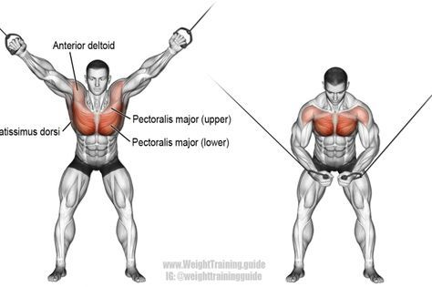
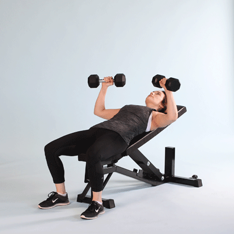
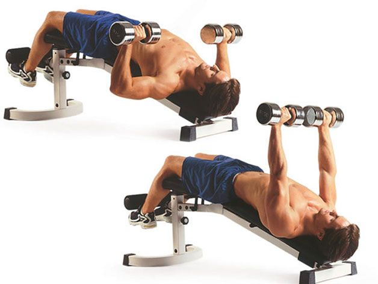
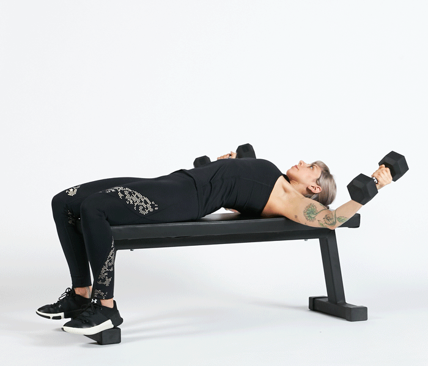

Why Workout Chest
Gym-goers around the world over have proclaimed that Mondays are International Chest Days. This is because the chest is considered one of the most important parts of the physique. So, warm up for a few minutes with some cardio or by using resistance bands to directly warm up the chest and let's go!
Chest Workout for Beginners
Incline Press

4 sets of 12 reps
Lie back on a bench set to an incline angle and lift a barbell to shoulder height, palms facing away from you. Breathe out as you press up with both arms. Lock out your arms and squeeze your chest before returning slowly to the start position.
Decline Press

4 sets of 12 reps
Hold a dumbbell in each hand, shoulder-width apart and overhand grip. Lie back on a decline bench
and extend your arms straight above you. Lower the weights slowly until they reach your chest, then
push the dumbbells back to starting position.
Flat Bench Fly

4 sets of 12 reps
Lie down on a flat bench holding two dumbbells at your shoulders with your palms facing inwards. Press the dumbbells up until your arms are almost fully extended. This is your starting position. From here, with a slight bend in your arms, arc the weights down to your sides until you feel a stretch across your chest. Squeeze your pecs to return the weights to the start position by reversing the movement.